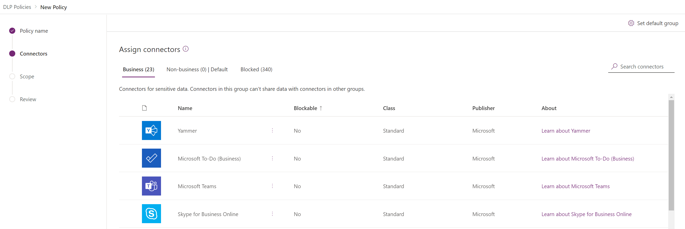
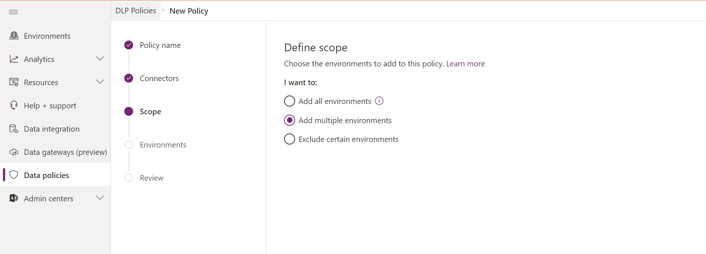
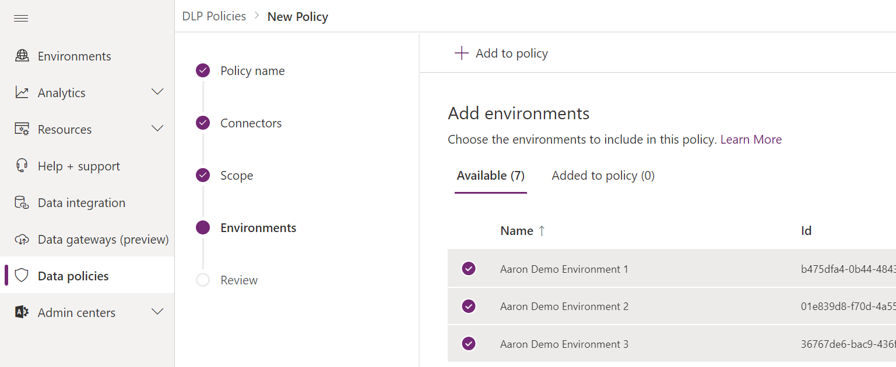
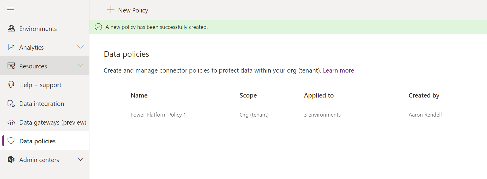

The Power Platform Data Loss Prevention (DLP) policies you should be considering on Day 1
[!include[content-disclaimer](../includes/content-disclaimer.md)]Why do I need to consider DLP?
Protecting your organization's data is a big topic and as you would expect, Microsoft is putting a lot of focus into this area.
However, an area that is often overlooked is within the Power Platform.
Security teams are typically focused on Microsoft 365 Security and Compliance: Retention Polices, DLP, Azure Information Protection (AIP), Labelling, etc. – and this is all good stuff – but what about people moving data (internally and externally) using Power Apps and Power Automate?
In Defining a Power Platform Environment Strategy I wrote about the concept of using Power Platform environments for Application Lifecycle Management (ALM) purposes and provided some examples of when it might be appropriate to build out from the single Default Environment that is created for each and every tenant. I purposely kept this simple and excluded other factors that may influence or complicate matters further, however DLP Policies may influence your strategy.
To follow on from that post, and assuming the concept of ‘Environments’ is better understood, the next step is to ensure your Power Platform is secure.
Note: Power Platform DLP (Data Loss Prevention) policies are not the same as Microsoft 365 Data Loss Prevention (DLP) policies!
What are connectors?
Out of the box, there are some 340+ ‘connectors’ which allow you to connect Power Apps and Power Automate to other services.
These services include the Microsoft “Standard” connectors (some 25+) such as SharePoint and Outlook and “Premium” connectors which connect to other line of business applications such as Google G-Suite, Box.com and DocuSign, which require you to have either existing credentials or a subscription to authenticate to them.
So why are DLP policies important then? And why do I need to consider from day 1?
The Power Platform opens up the option for users to create ‘Personal Productivity Applications’ and move data around, such as a user creating a Power Automate Flow to Box.com which is triggered on a SharePoint library that copies every document that is created or updated!
How do you create a DLP Policy?
From the Power Platform Admin Centre – Click on Data policies and click New Policy. Give your new policy a name.
Note: To create a DLP policy, you need to be a tenant admin or have the Environment Admin role.
Define which connectors you want to include in your policy.

Specify how you want this policy to be deployed. In the scenario of allowing a single business application to use a non-Microsoft connector, you would use the ‘Add multiple environments’ option to allow you to select the specific environment(s).

Select the environment(s) you wish your policy to apply to.

Publish your policy.

Note: DLP policies enforce rules for which connectors can be used together by classifying connectors as either Business or Non-Business. If you put a connector in the Business group, it can only be used with other connectors from that group in any given app or flow.
Recommendation
It can get relatively complicated when defining your DLP policies, and certainly a consideration that plays a part of defining your Power Platform Environment Strategy, but my recommendation for a day 1 policy is to block everything you can (Note: you can’t block the Microsoft connectors!) and only allow access where there is a justifiable business reason.
If you want to get clever, then creating DLP policies that are deployed to specific Power Platform Environments and allow access to a single connector such as DocuSign solely for the purpose of a Power Automate solution that runs on your Contracts Management document management site, would be an option.
Further Reading
- Microsoft: Data loss prevention policies
Principal author: Aaron Rendell